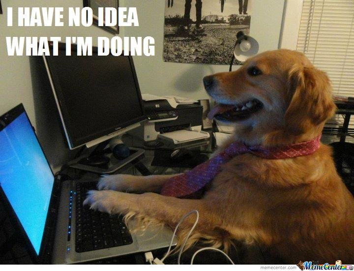
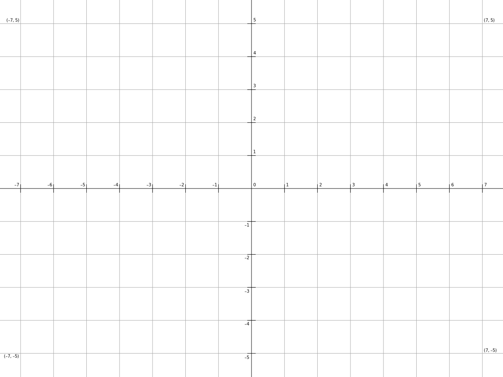
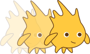
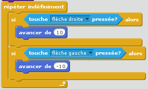
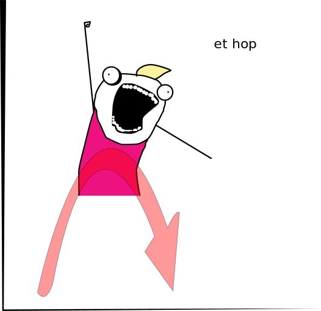
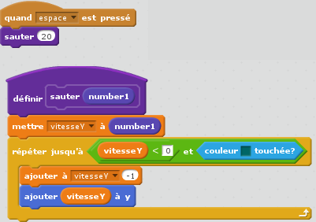

Actions et Réactions

Objectif : Bouger !
Comment faire avancer et sauter un personnage ?
(Et dans la vraie vie comment ça se passe ?)
Oui mais comment on programme ? (lol)
C'est pareil avec un ordinateur
L'ordinateur éxecute la fonction que l'on a programmé

D'abord, se repérer

Puis essayons d'avancer grâce à un algorithme
Omg des Maths! (et du code)
fonction avancer() {
x = x + 1
}
Ceci est une affectation. La variable "x" c'est comme un seau qui contient
une valeur.

Avancer dans scratch

Et pour sauter ?
(Attention blague : l'apesanteur)

Vocabulaire
if = si
else = sinon
forever = répeter indéfiniment
repeat = répeter
repeat until = répeter jusqu'à
when = quand
wait = attendre
change x by = changer x par
key = touche/bouton
set = mettre / définir
Un algorithme pour le saut
